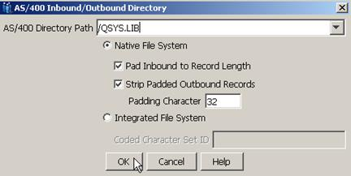
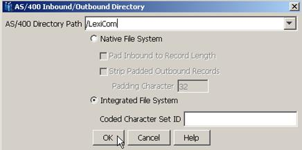

Follow the instructions below to tell the Cleo LexiCom application
whether your files will be located on the AS/400 native file system (QSYS.LIB) or the
integrated file system (IFS).
A display similar to the following will appear. Update the form as shown below:
For Native File Systems

- In the AS/400 Directory Path field, enter /QSYS.LIB. This entry allows the
Cleo LexiCom product
to correctly do the EDCDIC / ASCII format conversion for any file that begins with
the /QSYS.LIB path specifier.
- Select the Native File System option.
- Select the Pad Inbound to Record Length option if inbound files will consist
of variable length records. When this option is selected, all records are
transformed to a fixed-length format as they are stored in the AS/400 NFS file
member. End of line terminators (i.e., CR, LF or CRLF) are stripped from the record
and the remainder of the record will be padded with blanks. The record length is
determined from the AS/400 NFS target file. If the inbound file contains a record
larger than the AS/400 target file, an error will be logged and the file will not be
stored. When this option is not selected, the inbound file will be assumed to
already be fixed-length and will be streamed, i.e., no padding will be done to the
records as the they are written to the AS400 NFS file member and end of line
terminators will not be stripped from the file.
- Select the Strip Padded Outbound Records option if outbound records are a
fixed record length and are padded with the specified Padding Character. The
record length is determined from the AS/400 NFS target file. When this option is
selected, padding characters (if present) after the terminator (CR, LF or CRLF) will
be removed.
- The Padding Character is the decimal value of the character used in AS/400
target file for padding outbound records. By default, this value is set to 32 (the
ASCII representation of a space). Any ASCII value between 0 – 127 may be used.
- The Coded Character Set ID field is only used when accessing the Integrated
File System and is not accessible for the Native File System.
Note: In order for the Cleo LexiCom product to be
able to determine that source and destination paths are part of the AS/400 native file
system, the paths that you enter for the Inbox, Outbox (and optionally the Sentbox) on
the Host
®General panel must begin with the path that you specify in the
AS/400 Directory Path field.
For Integrated File Systems

- In the AS/400 Directory Path field, enter /LexiCom (or any other appropriate
IFS path).
- Select the Integrated File System option.
- Enter a value in the Coded Character Set ID field. If this field is left
blank, the CCSID will be based on the default locale.
Warning: Setting a CCSID is only intended for directories where payload (e.g.,
inbox/ and outbox/) will be stored. Do not set a CCSID for the /LexiCom installation
directory or for any of the directories used to run the application (e.g.,
/LexiCom/lib; /LexiCom/hosts; /LexiCom/jre, etc.). Doing so will cause
unpredictable results.